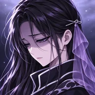
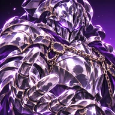
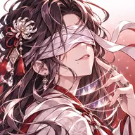
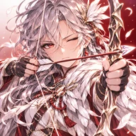
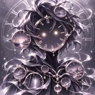

カジ
HP 7250ATK 3250DFS 1100
特性
- 背水
- 残りHPが半分以下でATK+1250
技
- ✊ 停止「堰切り」
- 特大ダメージ(残りHP半分以下で極大)
- ✌️ 跳躍「踏み越し」
- 通常攻撃、自分のATK+1000(3ラリー)
- 🖐️ 遡行「構え直し」
- 通常攻撃、次の攻撃ATK+2250、相手のDFS−1000(2ラリー)
刻戦(コクセン)に登場するキャラクター 48体の、能力値・特性・技の一覧です(ver 1.95 時点)。
キャラクターごとに、グー(停止)・チョキ(跳躍)・パー(遡行)で出る技が違います。じゃんけんに勝った側だけが、出した手の技を使えます。「この相手は、どの手で勝ちたいか」を知っておくことが、読み合いの第一歩です。遊び方は遊び方・ルールを見てください。
停止の力を得意とし、今の時間を守ろうとする陣営。
遡行の力を得意とし、時の始まりからやり直そうとする陣営。


跳躍の力を得意とし、滅びの先の未来へ跳ぼうとする陣営。


どの陣営にも属さない者たち。
